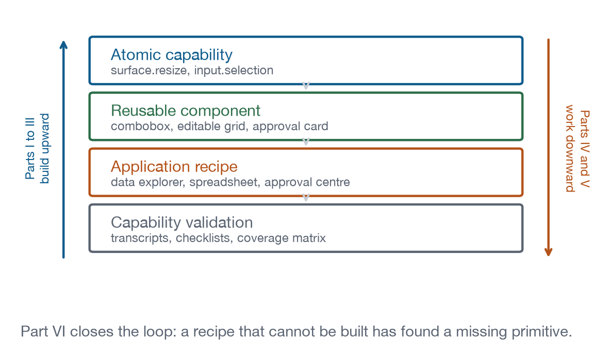

How to Read This Book
The four layers, the vocabulary, the labels on every entry, and the one question the whole book is trying to answer.
The four layers

The book has one shape and it repeats at every scale.
Atomic capability. The smallest independently useful operation, with a namespaced identifier. surface.resize. input.selection. tool.invoke. Flat names are not used, because the namespace is what makes the index navigable once there are eighty of them.
Reusable component. Capabilities composed into something with a name a designer would recognise. A combobox is input.keyboard plus input.selection plus focus management plus an ARIA pattern. A component entry lists which capabilities it composes, which agent interactions it participates in, and which Authoring Practices Guide pattern governs its keyboard behaviour.
Application recipe. Components composed into an application: a data explorer, a spreadsheet, an approval queue. Each recipe declares a capability delta, the primitives it exercises that no earlier recipe does. A recipe with an empty delta gets merged or deleted, because it is not teaching anything and not testing anything.
Capability validation. The recipes run as tests. A host either passes them or does not, and the coverage matrix in Appendix A is generated from the test annotations rather than written by hand.
The vocabulary
- Host
- The application the user is actually in: a chat client, an IDE, a console. It connects to MCP servers, allocates surfaces, and mediates everything privileged. There is no way around it and no way to see past it.
- Surface
- The region the host gives your application. Inline card, side panel, modal, fullscreen. You do not own it, you are lent it, and the terms change without warning.
- Application, or view
-
The UI your server delivers as a
ui://resource and the host renders in a sandboxed iframe. The specification calls it the View. This book uses both words, and means the same thing by them. - Agent
- The model-driven participant. It can call tools, receive context, and hold the conversation the user is in the middle of.
- Atomic capability
- The smallest independently useful UI or host-interaction operation, with a stable namespaced identifier.
- Agent boundary
- The line between interactions handled locally and interactions that involve the model, tools, or external state. Chapter 3 is entirely about where to draw it.
- Golden transcript
- The recorded JSON-RPC message log for a scenario. Replaying the scenario and diffing the transcript is how this book proves anything.
Reading a capability entry
Every entry in Parts II and III opens with a block like this one:
surface.resizeCoreLevel 1On the wireReport content size so the host can size the frame around it.
- Messages
ui/notifications/size-changedcontainerDimensions- Ground
- The MCP Apps extension defines a message for it.
- Recipes
- Data Explorer, Dashboard, Monitoring Console
- Demo
- lab-surface
The badges are not decoration and they are not opinion. Each is generated from the registry, and the build fails if any of them stops being true.
Level 1 to 4 places the capability on the conformance ladder in Chapter 1. Levels are cumulative: a Level 3 host supports everything at Levels 1 and 2.
Core or Extended says whether the capability is mandatory at its level. Core capabilities are the promise a host makes by claiming the level. Extended capabilities are optional at any level, which means your application must handle their absence rather than assuming a modern host will have them.
The ground badge is the most useful thing on the page, and the labels mean exactly this:
On the wire means the MCP Apps extension defines a message for it, and the entry names the message. You send it, the host answers it, and the transcript pane shows it.
Core MCP means the base protocol defines it and views inherit it. Cancellation and progress work this way.
Platform means the browser inside the sandbox already does it and there is no host round trip at all. Pointer events, text selection, and the date picker are in this group. Looking for a protocol feature here is a way to waste an afternoon.
Yours to build means the view implements it and nobody else can. Undo is the clearest case: no host can undo your document model for you.
Not standardised means there is no mechanism, anywhere, today. Fourteen capabilities carry this label. Each entry says what you can do instead, and Appendix B collects them into one table, because a list of the things a platform cannot yet do is the most actionable page in a book like this.
Draft only appears when a message exists in the current specification draft but not in the last dated release, 2026-01-26. If you are writing against a host that shipped early, those are the messages most likely to be missing.
The demonstrations
Entries that have a live demonstration embed it directly:
Click something in the frame. The transcript underneath fills with the actual messages, in order, with direction arrows. The buttons in the grey strip are things only a host can do, so the page does them on the host’s behalf: change the container size, withdraw a display mode, start a teardown. The tab strip switches between the message log and the exact file the frame is running.
That last point carries weight. The frame loads demos/lab-surface/index.html; the code tab fetches demos/lab-surface/index.html. They cannot disagree.
Four ways in
You arrived with a specific problem. Appendix A is the index. Find the capability, read its ground badge first, and the entry will tell you in one line whether you are looking for a message, a browser feature, or an afternoon’s work.
You arrived with an application to build. Part V. Find the recipe closest to what you are building, read its local and agentic split, then read its host dependency table. That table is the list of things that can go wrong in a host you have not tested against.
You are implementing a host. Chapter 1 for the ladder, Chapter 2 for the wire, Appendix C for the checklist, and then Chapter 27’s ordering advice, which is that the handshake, surface.resize and the teardown handshake are worth more than everything else put together.
You want to know what is missing. Appendix B, which is fourteen entries long and is the most actionable page here.
What this book assumes you know
Enough HTML, CSS and JavaScript to build a small interface without a framework, because every application here is built that way and none of them uses one. Enough of MCP to know what a tool and a resource are. Nothing about the Apps extension, which Chapter 2 covers completely in one sitting.
It does not assume you have a host to test against, which is why the demonstrations run on this page.
The question
Everything here exists to answer one question:
Can a host construct conventional, native-like applications entirely from a small, well defined set of reusable UI capabilities?
If a recipe needs host behaviour that the primitives in Parts II and III cannot express, the recipe has found a missing capability, and that finding belongs upstream in the specification rather than in a private extension. If the recipes run unmodified across several hosts, the capability model is evidence rather than opinion. Part VI describes the machinery that makes both outcomes observable.